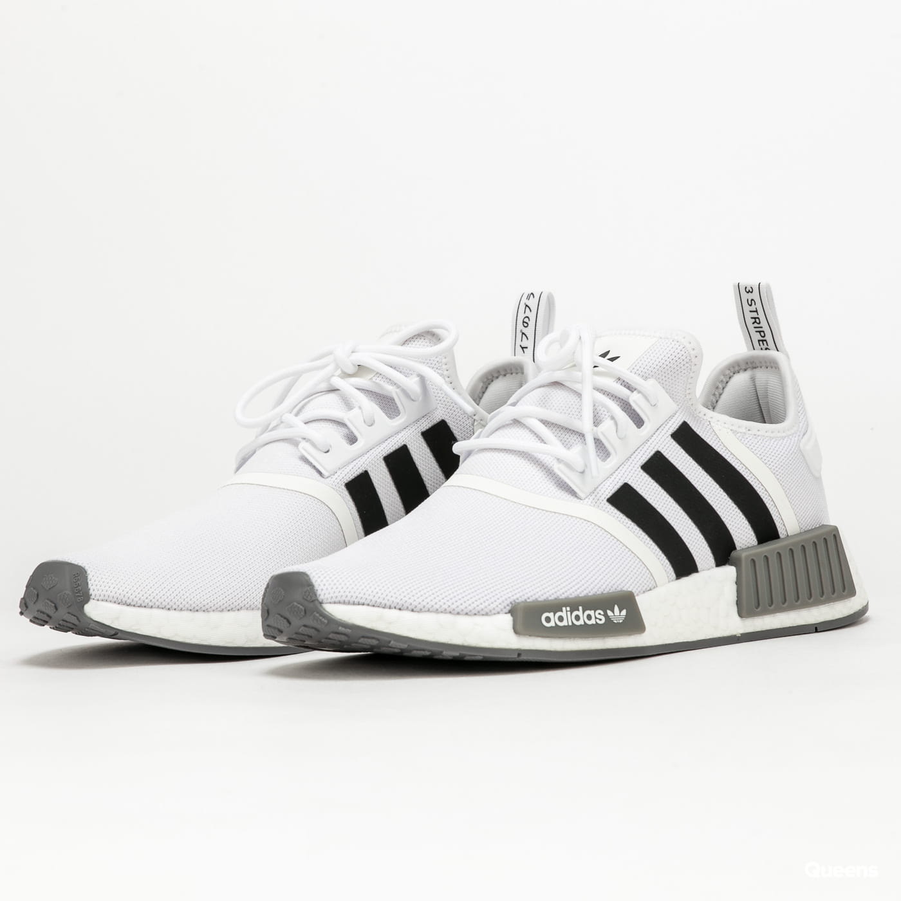

nike shoes

Nike, Inc. er et amerikansk multinasjonalt selskap som markedsfører joggesko, treningsklær og sportsutstyr. Nike var tidligere kjent som Blue Ribbon Sports (BRS, 1964–1978), og ble grunnlagt av friidrettsutøveren Phil Knight og hans trener Bill Bowerman. I 1978 bytta firmaet navnet til Nike inc og publiserte 2 år etterpå. På tidlig 21 århundre-det hadde Nike utsalgssteder og distributører i mer enn 170 land, og logoen deres var kjent igjen over hele verden[5] Virksomheten bruker merkenavn som Nike, Air Jordan, Nike Golf, Nike SB (Skateboarding) og Team Starter, men bruker også navn til heleide datterselskaper som Cole Haan, Converse og Hurley International. Nike uttales naiki, som er den amerikansk-engelske uttalen av den greske gudinnen Nike (Νίκη), som legemliggjorde seier. Selskapet ble grunnlagt 25. januar 1964 og har hovedkvarter i Washington County (Oregon) Selskapet hadde 74 400 ansatte i 2017. Nike er et av verdens største sportsselskaper, og driver omfattende
Adidas shoes

Adidas AG er et tysk selskap som produserer treningstøy og -utstyr. Selskapet er en del av Adidas Group, som også består av selskapene Reebok, Taylormade (golf) og Rockport. Selskapet ble stiftet 18. august 1949, og var per 2008 verdens nest største fabrikant av sportstøy.[5] Adidas' kjennetegn er tre parallelle striper som går igjen på det meste av klær og sko fra selskapet. De tre stripene er også integrert i selskapets logoer. Selskapets omsetning i 2005 var 6,6 mrd euro og nesten 10,1 mrd euro i 2006.[trenger referanse] Hovedfokuset til Adidas har alltid vært fotballdrakter og fotballutstyr, og er en av verdens største sponsorer for klubblag og nasjonale lag. I 1979 lanserte Adidas fotballskoen Copa Mundial og holder rekorden for den mestselgende fotballskoen.[trenger referanse] Adidas har mange store draktavtaler med fotballklubber verden rundt. Bayern München, Real Madrid, Manchester United, River Plate, A.C. Milan og Juventus er noen av de store klubbene Adidas har avtale med, samt landslag som Tyskland, Spania, Argentina og Russland.[trenger referanse] I juli 2014 signerte Adidas en ti års avtale med Manchester United, som begynte i 2015-2016-sesongen. Denne avtalen har garantert en minste verdi på omtrent 8,5 milliarder norske kroner, som gjør at det er den mest verdifulle draktavtalen i historien.